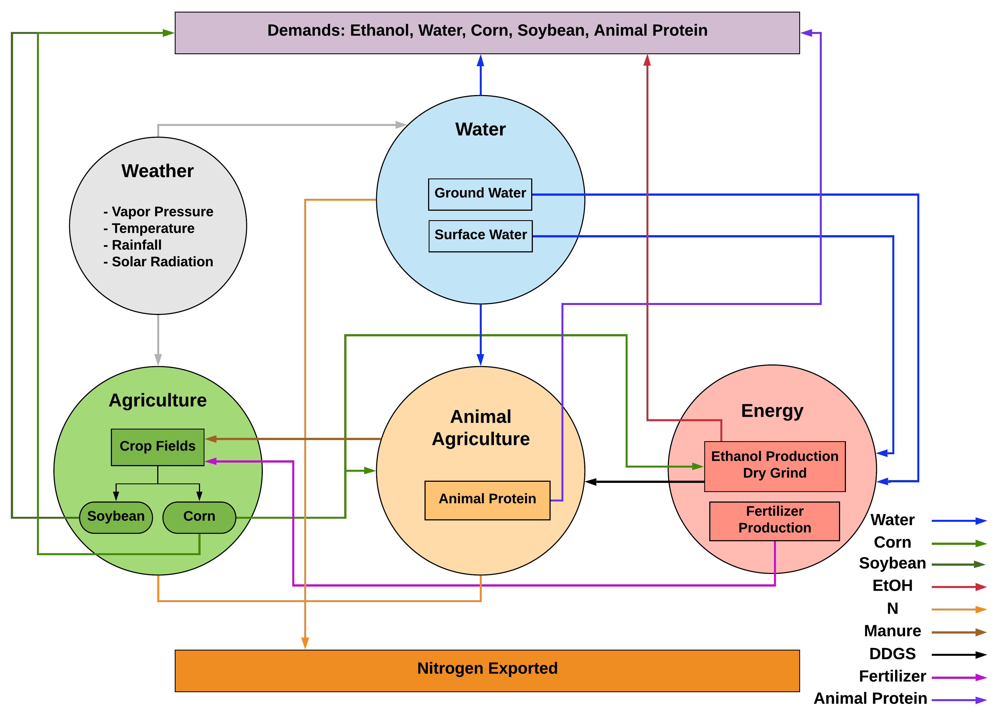

The proposed approach for the Iowa food-energy-water (IFEW) system modeling draws on multidisciplinary analysis and optimization (MDAO) theory. For this research, the MDAO approach is applied to the IFEW system to model the synergies of the inherently coupled food, water, and energy disciplines with the goal of meeting Iowa’s socioeconomic demands. The purpose of the model is to provide critical information regarding the complex interdependencies to enable efficient policy and decision making in Iowa with respect to the environmental impact of nitrogen export. The proposed IFEW system model represents individual components of the IFEW system and their interdependencies, including the socioeconomical and environmental constraints, as shown in the figure below.
